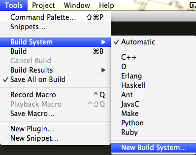
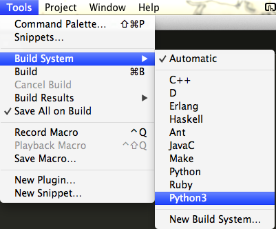

Installing Python 3 and IDLE
You'll need to install a Python for this class (because, you know, that's what we're programming in)!
🐍🐍🐍🐍
- we'll be using Python 3.x
- it comes with a text editor called Idle
- instructions for installation can be found on the departmental syllabus: http://cs.nyu.edu/courses/fall15/CSCI-UA.0002-002/common_syllabus/#software
Alternatives to IDLE (Other Text Editors)
PyCharm
- Download the Free Community Edition of PyCharm
- Install PyCharm
- If you're on OSX, Yosemite, you may have to trick PyCharm into working with your system…
- After moving PyCharm into your Applications folder…
- Open the Applications folder (/Applications) in finder
- Right-click on the PyCharm icon
- Click on Show Contents
- Right-click on info.plist
- Choose "Open With"
- Choose "Other…"
- Choose "TextEdit"
- Find JVMVersion
- In the line underneath, <string>1.6*</string>
- …change 1.6* to 1.8*
- See the animated gif)
- If you're on OSX, Yosemite, you may have to trick PyCharm into working with your system…
- Configure PyCharm to use Python 3
- Go to PyCharm (in menu bar)
- Choose "Preferences"
- Click on "Default Project" on the left sidebar
- Click on "Interpreter"
- Choose Python 3 from the dropdown labeled "Project Interpeter" on the right
- See the animated gif)
- Create a new program…
- Create a new project
- Click on project name on left side bar
- Go to File in the menu bar
- Choose "New…"
- Choose "File"
{kind=link}
{kind=link}
Using Sublime Text 2 with Python 3
Overview
Sublime text uses "build systems" to let you run files through external commandline applications. One use for this is to run your code through the Python interpreter!
Sublime Text 2 already comes with a Python build, but it uses your system's Python, which is most likely 2.x. If you've installed Python 3 side-by-side with your system Python, you can create a build specifically for Python 3.
Instructions
(note that these instructions are osx specific; you may not need the "path" line in the configuration for windows)
- Download and install Sublime Text 2
- Start Sublime Text 2
- Go to Tools → Build System → New Build System…

- Add this code to untitled.sublime.build:
{
"cmd": ["python3", "-u", "$file"],
"file_regex": "^[ ]*File \"(...*?)\", line ([0-9]*)",
"selector": "source.python",
"path": "/usr/bin:/bin:/usr/sbin:/sbin:/usr/local/bin"
}- Save this file as Python3.sublime.build (put it in /Users/yourusername/Library/Application Support/Sublime Text 2/Packages/User, which is the default directory that sublime drops you in)
- Go to Tools → Build System
- You should now see Python3 as a build option
- Select Python3 as your build system:

Usage
From here on, you can use ⌘ + b (or Tools → Build) to run your Python 3 programs
Verification
- Create a new file and save it as test_python3_build.py
- In this file, put in the following lines of code:
import sys
print(sys.version)- Run your program: ⌘ + b
- It should print out something similar to:
3.2.3 (v3.2.3:3d0686d90f55, Apr 10 2012, 11:25:50)
[GCC 4.2.1 (Apple Inc. build 5666) (dot 3)]
[Finished in 0.1s]